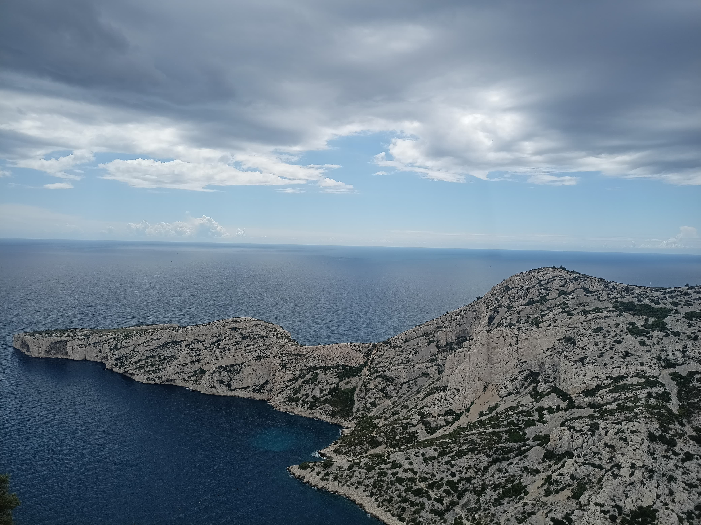

Hrishabh Mishra
Department of Mathematics
University of Wisconsin-Madison
480 Lincoln Drive, Madison, WI 53706
office: VV 520
email: hmishra4[@]wisc.edu
I am a PhD student in Mathematics at UW-Madison. Before this, I studied Fundamental Mathematics (M2) at Université Paris Cité as a PGSM fellow, and earned my undergraduate degree in Mathematics and Computer Science at CMI. My research interests are in number theory, especially arithmetic statistics.

preprints and publications
Morphism spaces on low degree hypersurfaces
(arXiv:2609.20783).Integral Hasse principle for Markoff type cubic surfaces (with an appendix by Victor Y. Wang)
(arXiv:2408.06846).On Malle's conjecture for the product of symmetric and nilpotent groups (with Anwesh Ray)
Nagoya Math. J., 259 (2025), 473–498. (arXiv:2402.01189)Upper bounds for the number of number fields with prescribed Galois group (with Anwesh Ray)
(arXiv:2310.00601).Counting number fields whose Galois group is a wreath product of symmetric groups (with Anwesh Ray)
Ann. Math. du Québec, to appear. (arXiv:2306.15411)On the number of subrings of \(\mathbb{Z}^n\) of prime power index (with Anwesh Ray)
(arXiv:2211.16595).
miscellaneous
Titchmarsh divisor problem in short intervals [pdf]. This proves an approximate formula for the sum \(\sum_{n \leq x} \Lambda(n)\tau(n-1)\) involving zeros of Dirichlet \(L\)-functions. Using the approximate formula we obtain asymptotics for \(\sum_{x < n \leq x+y}\Lambda(n)\tau(n-1)\) where \(x^{\theta} < y < x\) for suitable \(0 < \theta < 1\).
Integral points on Markoff type cubic surfaces [poster]. A poster created to explain the main result of the paper Integral Hasse Principle for Markoff type Cubic Surfaces to a general audience.
Frobenius distributions of Drinfeld modules of any rank [pdf]. A short write-up based on my talk for a course assessment on Drinfeld modules. In this write-up, I discuss the main result from the paper Frobenius Distributions of Drinfeld Modules of Any Rank by C. David.
Interlacing families and Ramanujan graphs [pdf]. This is a short exposition on the work of Marcus, Spielman, and Srivastava proving the existence of bipartite Ramanujan graphs in all degrees using interlacing families.